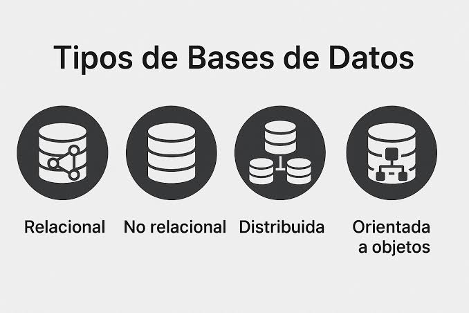
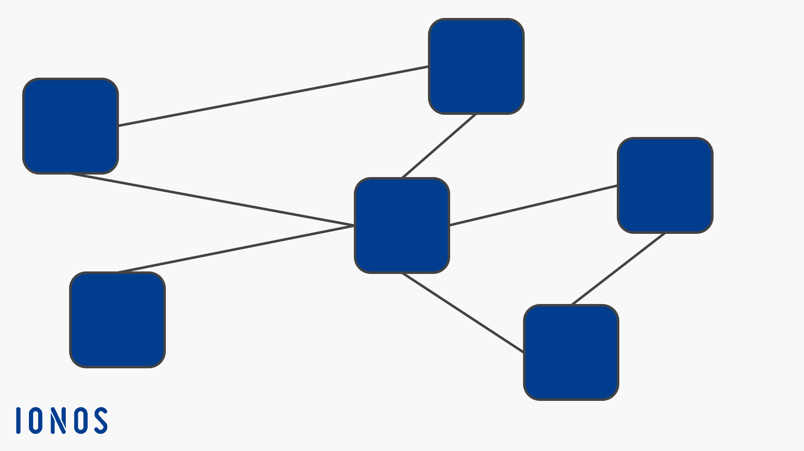

Bases de Datos

¿Qué es una Base de Datos?

Una base de datos es un conjunto de información organizada y estructurada para poder ser consultada, administrada y actualizada de forma eficiente. Su objetivo es almacenar datos de manera ordenada y mantenerlos disponibles para cualquier aplicación o usuario que los necesite.
El uso de bases de datos es fundamental hoy en día, ya que casi todos los sistemas informáticos dependen del almacenamiento de información, desde redes sociales hasta bancos, tiendas en línea y aplicaciones móviles.
Tipos de Bases de Datos
- Relacionales (SQL): almacenan datos en tablas y usan lenguaje SQL. Ej.: MySQL, MariaDB, PostgreSQL.
- No Relacionales (NoSQL): se usan para datos más flexibles. Ej.: MongoDB, Firebase.
- Orientadas a grafos: permiten representar relaciones complejas. Ej.: Neo4j.
- Embebidas o locales: livianas y utilizadas en apps móviles. Ej.: SQLite.
- En la nube: almacenadas en servidores remotos. Ej.: Amazon RDS, Google Cloud SQL.
Cada tipo se utiliza dependiendo de las necesidades del proyecto: estructura de datos, velocidad, escalabilidad y volumen de información.
Modelos de Bases de Datos
Los modelos más utilizados son:
- Modelo relacional: organiza la información en tablas.
- Modelo jerárquico: estructura los datos como un árbol.
- Modelo de red: permite múltiples relaciones entre nodos.
- Modelo orientado a objetos: ideal para datos complejos.
Estos modelos definen cómo se organiza la información, cómo se accede a ella y cómo se relacionan los diferentes elementos.
¿Qué es SQL?
SQL (Structured Query Language) es un lenguaje utilizado para gestionar y consultar datos dentro de bases de datos relacionales. Permite realizar acciones como:
- Crear tablas
- Insertar registros
- Actualizar información
- Eliminar registros
- Realizar consultas avanzadas
Es uno de los lenguajes más importantes para cualquier programador, ya que la mayoría de las aplicaciones utilizan bases de datos SQL.
Aplicaciones de las Bases de Datos
Las bases de datos se utilizan en prácticamente todos los sectores:
- Sistemas bancarios y transacciones
- Redes sociales
- Tiendas en línea
- Hospitales y registros médicos
- Sistemas educativos
- Aplicaciones móviles
- Empresas y gestión administrativa
Sin bases de datos, sería imposible almacenar y organizar la enorme cantidad de información que manejan los sistemas modernos.